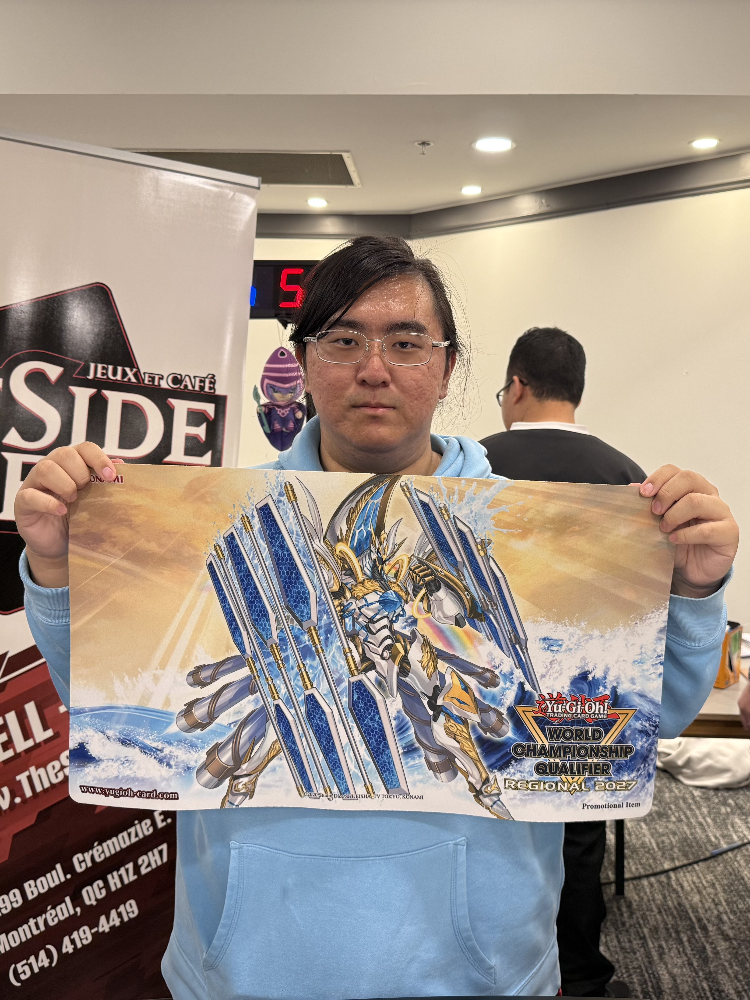

About Me

My name is Wei-Ning Kung, and I also go by William. I am from Taiwan and have lived in Ottawa and Montreal for five years. I am currently in my 1st year of the IMD program at Algonquin College. Before coming to Algonquin, I studied Computer Science at the University of Ottawa. I am interested in design and enjoy learning about new technologies, especially when I can apply what I learn through practice.
Outside of school, one of my biggest hobbies is trading card games. I really enjoy both the competitive side and the social side of the game. I have been able to meet new people and make friends with others who share the same interests. This hobby allows me to connect with people from around the world, exchange ideas, and learn different strategies together.
"Believe in yourself." - Hideo Kojima, GameSpot interview